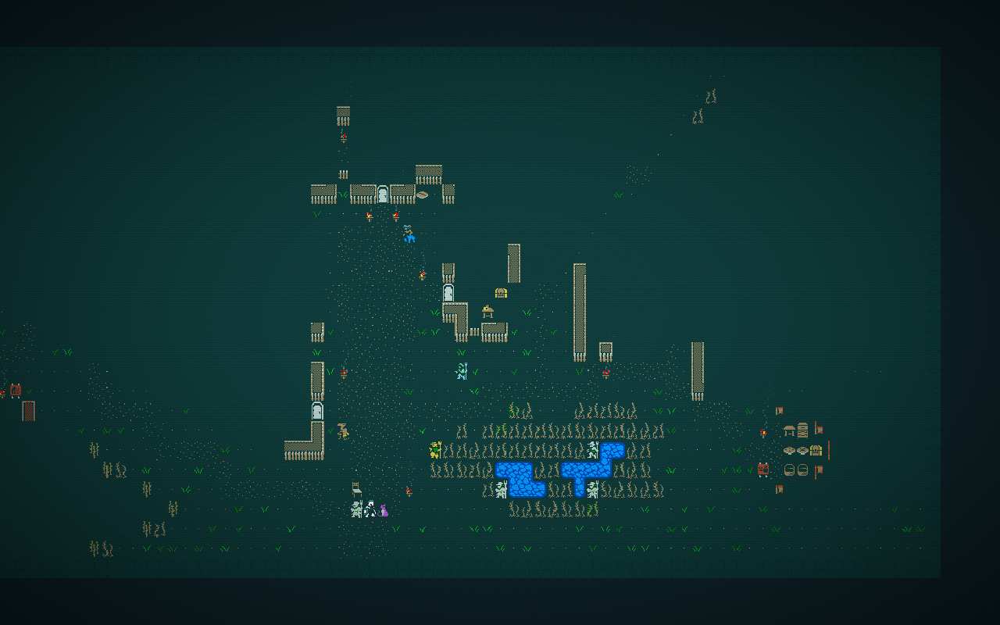
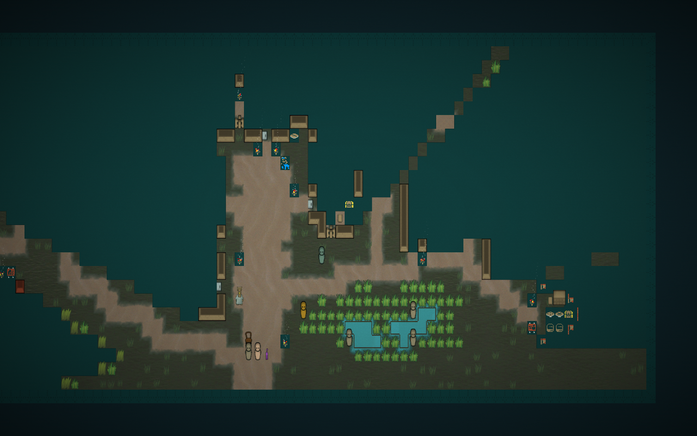

The selected adult dromad stays fixed. Body, head and neck, dulla tint, Cloth Robe and Shillelagh are separate layers. The robe was refined in context, returned as an isolated item, then registered to this body.
The small views show the same assembly at 52 × 94 pixels; native captures below establish its actual game size. West mirrors east. Body includes arms, feet and the hump. Neck and dulla belong to the head. The robe has its own transparent neck and sleeve openings.
Registered model · Actual Cloth Robe sources · Selected unclothed base · Specification and remaining work
Verified in a hidden native Qud run: four-way facing/contact, actual robe and held-item equip/unequip, tint, visibility/fallback, hurt without advancing simulation, native look and save/load. Full frames below are unchanged; the small windows only magnify their browser view.


Verified source, model and frame hashes. One adult sample; full village Stage 3 remains ACTIVE. Other residents use earlier placeholders or native sprites.